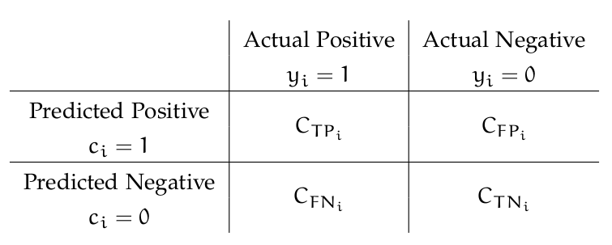

Introduction to Example-Dependent Cost-Sensitive Classification¶
Classification methods are used to predict the class of different examples given their features. Standard methods aim at maximizing the accu racy of the predictions, in which an example is correctly classified if the predicted class is the same the as true class. This traditional approach assumes that all correctly classified and misclassified examples carry the same cost. This, however, is not the case in many real-world appli cations. Methods that use different misclassification costs are known as cost-sensitive classifiers. Typical cost-sensitive approaches assume a constant cost for each type of error, in the sense that, the cost depends on the class and is the same among examples [Elkan, 2001; Kim et al., 2012]. Nevertheless, this class-dependent approach is not realistic in many real world applications.
For example in credit card fraud detection, failing to detect a fraudulent transaction may have an economical impact from a few to thousands of Euros, depending on the particular transaction and card holder [Sahin et al., 2013]. In churn modeling, a model is used for predicting which customers are more likely to abandon a service provider. In this context, failing to identify a profitable or unprofitable churner has a significant different financial impact [Glady et al., 2009]. Similarly, in direct marketing, wrongly predicting that a customer will not accept an offer when in fact he will, has a different impact than the other way around [Zadrozny et al., 2003]. Also in credit scoring, where declining good customers has a non constant impact since not all customers generate the same profit [Verbraken et al., 2014]. Lastly, in the case of intrusion detection, classifying a benign connection as malicious has a different cost than when a malicious connection is accepted [Ma et al., 2011].
In order to deal with these specific types of cost-sensitive problems, called example-dependent cost-sensitive, some methods have been proposed recently. However, the literature on example-dependent cost- sensitive methods is limited, mostly because there is a lack of publicly available datasets that fit the problem [Aodha and Brostow, 2013]. Standard solutions consist in modifying the training set by re-weighting the examples proportionate to the misclassification costs [Elkan, 2001; Zadrozny et al., 2003].
Example-Dependent Cost-Sensitive Cost-Matrix¶
In this context, the example-dependent costs can be represented using a 2x2 cost matrix [Elkan, 2001], that introduces the costs associated with two types of correct classification, cost of true positives (C T P i ), cost of true negatives (C T N i ), and the two types of misclassification errors, cost of false positives (C FP i ), cost of false negatives (C FN i ), as defined in the following table:
{kind=link}